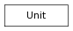

Returns the inernal units currently in use for that type
Returns the global UI units currently in use for that type
Returns the units currently in effect for this instance
Converts a string unit name to the internal int unit enum representation
Converts an internal int unit enum representation tp the string unit name
Sets the global UI units currently to use for that type
The units currently in effect for this instance